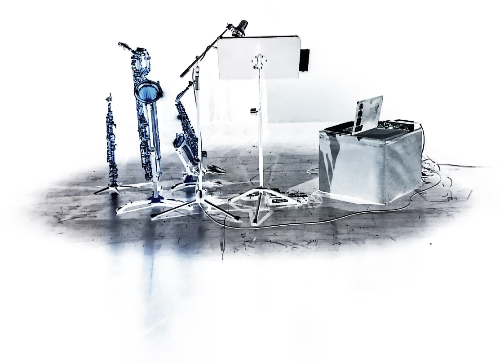

ASSOCIATION
L’Association, crée en 2019 et basée à Lausanne, a pour but la promotion de l’activité musicale en mettant l’accent sur la
création musicale d’aujourd’hui, la diffusion, promotion, production et développement de
la musique contemporaine.
NOS IDÉES
Pour atteindre ce but, l’association développe notamment:
-
L’organisation des conferences artistiques et scientifiques, tables rondes,
présentations, master-class, festivals et concerts et l’enregistrements des ses
activités.
-
L’invitation des artistes, des scientifiques, des éducateurs, des chercheurs provenant
de Suisse et l’étranger pour la réalisation des propositions spécifiques de l’association.
-
La promotion des œuvres des compositeurs suisses et étrangers, ainsi que l’activité des
interprètes, chefs et des improvisateurs à travers des productions, performances
publiques, des enregistrements et recherche.
-
La collaboration avec des autres organisations culturelles, artistiques ou scientifiques
pour le développement et la diffusion des recherches, méthodologies d’enseignement
et production, liées à la composition et l’interpretation de la musique contemporaine.
-
La création et soutien de l’activité et la recherche artistiques interdisciplinaires (arts
visuelles, arts de performance, théâtre et multimedia).
-
La collaboration avec des autres organisations culturelles, fondations, institutes,
universités, conservatoires de musique, Hautes Écoles, sociétés de musique, centres de
recherche, associations à but non lucratif, bibliothèques, institutions du gouvernement
au niveau cantonal ou national, entreprises privées pour l’implementation des
objectifs en common.
-
La promotion de la culture et l’art Suisse au niveau internationale à travers des projets
artistiques et pédagogiques, des échanges culturelles et partenariats avec des
organisations basés à l’étranger.
-
La promotion et le financement des jeunes compositeurs, interprètes, chefs et
improvisateurs et son engagements dans projets artistiques et pédagogiques.
-
La publication de materiel graphique, audiovisuelle et digitale, ainsi que des
transmissions radio et Tv pour la promotion et diffusion des objectifs de l’association.